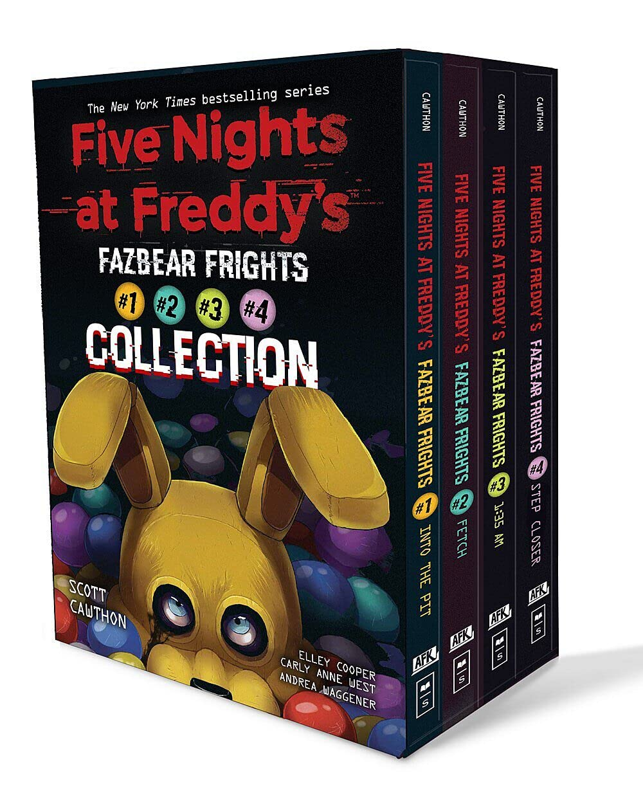

A coletânea *Fazbear Frights* é uma série de contos assustadores que exploram temas de medo, remorso, amor, perda e o impacto das ações humanas. Cada história tem uma conexão única com o universo de *Five Nights at Freddy's*, fornecendo novos mistérios e complementando a lore já rica da franquia.
